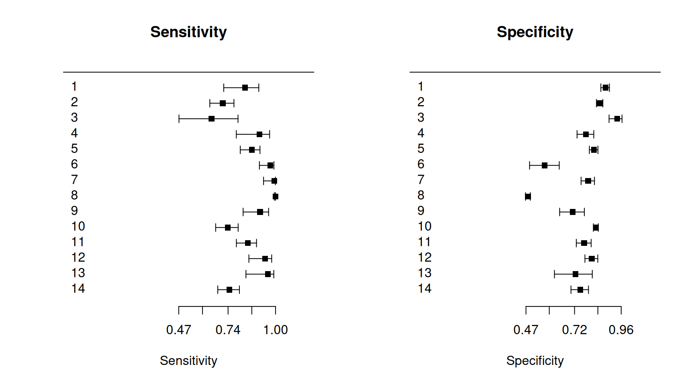
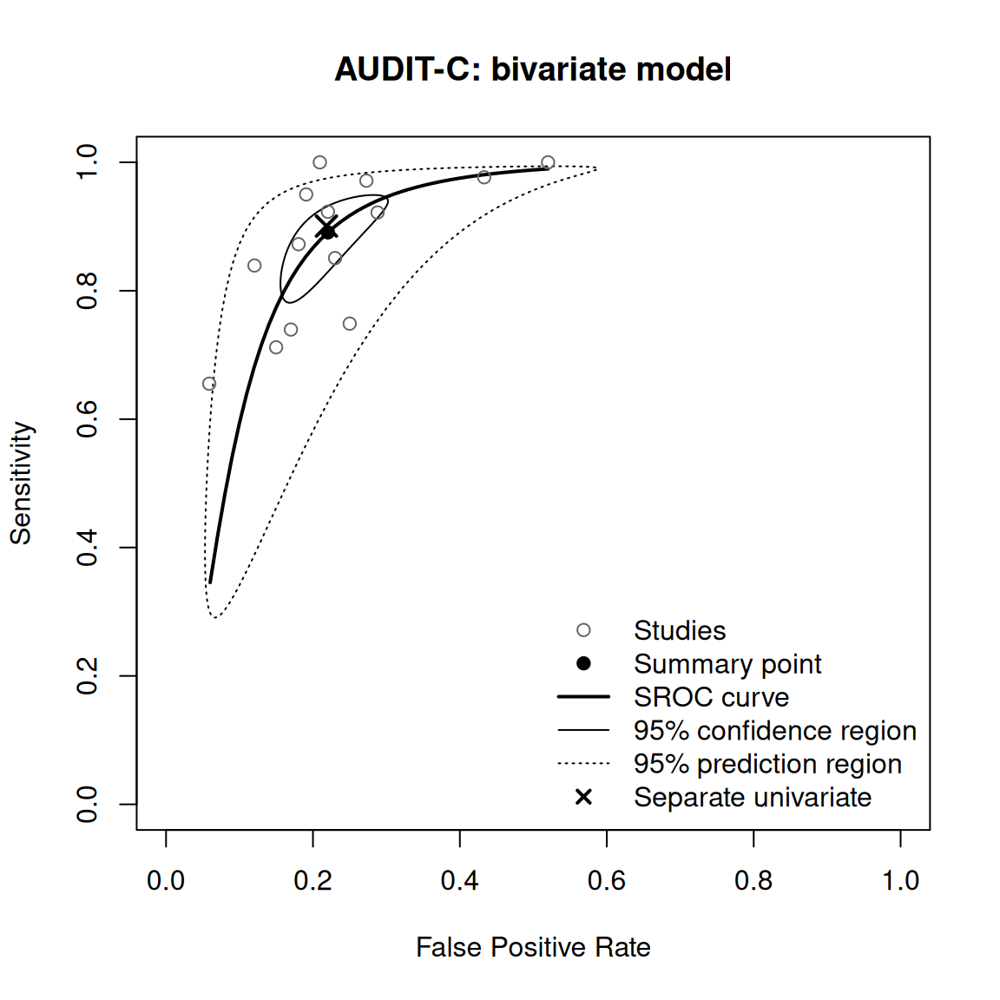
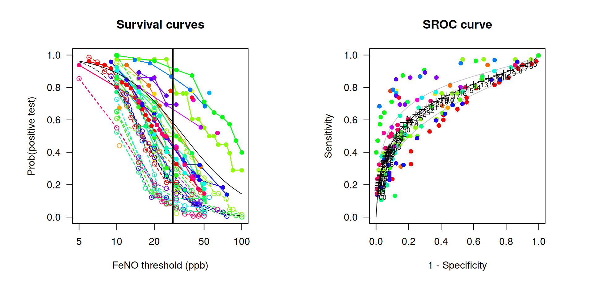
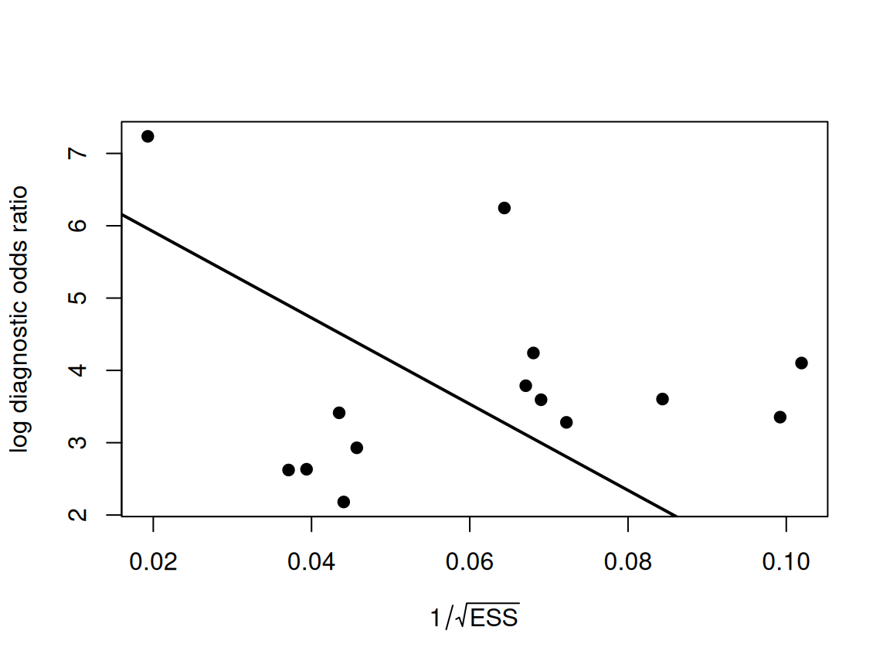
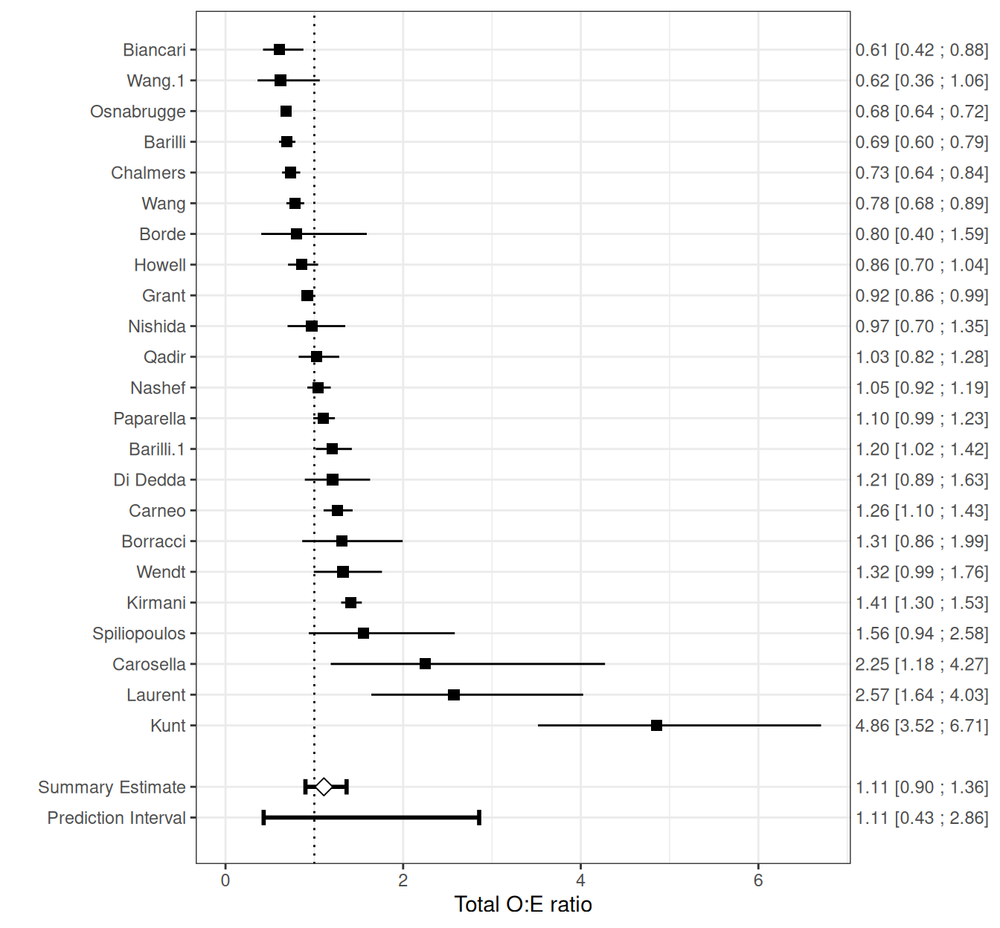

13 Diagnostic Test Accuracy
Not every research synthesis asks whether an intervention works. In medicine, psychology and many applied fields, a large share of evidence concerns classification: how well does a screening questionnaire detect hazardous drinking, a cognitive test detect dementia, a credit score flag default, or a fraud model flag fraudulent claims? A diagnostic test accuracy (DTA) study applies an index test and a reference standard to the same people and cross-classifies the results. A DTA meta-analysis combines such studies to estimate how accurate the test is and how much that accuracy varies across settings.
DTA meta-analysis differs from the effect-size meta-analysis of earlier chapters in two fundamental ways. First, test accuracy is intrinsically bivariate. A test is described by two numbers, its sensitivity and its specificity, which trade off against each other as the positivity threshold changes. Collapsing them into a single effect size loses essential information, and analysing them separately ignores their dependence. Second, between-study heterogeneity in DTA is typically large and partly systematic, because studies use different thresholds, populations and reference standards. Methods that work well for treatment effects can therefore mislead here. The modern consensus, reflected in the Cochrane handbook for DTA reviews (Deeks et al. 2023), is to use hierarchical models: the bivariate random-effects model (Reitsma et al. 2005) or the equivalent hierarchical summary ROC model (Rutter and Gatsonis 2001; R. M. Harbord et al. 2006).
This chapter defines the accuracy measures, explains why naive pooling fails, develops the bivariate and HSROC models and their equivalence, and fits them in R in three ways: with mada (Doebler et al. 2012), as a bivariate binomial generalized linear mixed model with lme4 (Bates et al. 2015), and as a bivariate normal model with metafor (Viechtbauer 2010). We then turn to meta-regression, heterogeneity, small-study effects, risk of bias, and reporting. The bivariate model is a special case of the multivariate meta-analysis treated in Chapter 12.
13.1 Measures of test accuracy
13.1.1 The two-by-two table
Each primary study yields a two-by-two table of index test result against true disease status as determined by the reference standard:
| Disease present (\(D^+\)) | Disease absent (\(D^-\)) | |
|---|---|---|
| Test positive | TP | FP |
| Test negative | FN | TN |
| Total | \(n_1 = \text{TP} + \text{FN}\) | \(n_0 = \text{FP} + \text{TN}\) |
The two basic measures condition on true status:
\[ \text{Se} = P(T^+ \mid D^+) = \frac{\text{TP}}{\text{TP} + \text{FN}}, \qquad \text{Sp} = P(T^- \mid D^-) = \frac{\text{TN}}{\text{TN} + \text{FP}}. \]
Sensitivity (the true positive rate, TPR) is the proportion of diseased people the test detects, and specificity is the proportion of non-diseased people the test correctly clears; \(1 - \text{Sp}\) is the false positive rate (FPR). Because TP and FN come from the diseased participants and FP and TN from the non-diseased, the estimates of sensitivity and specificity within a study are based on disjoint samples and are therefore statistically independent. This fact will simplify the within-study part of the models below.
Several derived measures combine the two. The likelihood ratios are
\[ \text{LR}^+ = \frac{\text{Se}}{1 - \text{Sp}}, \qquad \text{LR}^- = \frac{1 - \text{Se}}{\text{Sp}}, \]
and they update pre-test odds of disease to post-test odds by Bayes’ theorem: post-test odds \(=\) pre-test odds \(\times\) LR. A positive likelihood ratio above 10 or a negative likelihood ratio below 0.1 is often described as producing a large change in probability. The diagnostic odds ratio (DOR) is
\[ \text{DOR} = \frac{\text{LR}^+}{\text{LR}^-} = \frac{\text{Se}/(1 - \text{Se})}{(1 - \text{Sp})/\text{Sp}} = \frac{\text{TP} \times \text{TN}}{\text{FP} \times \text{FN}}, \]
a single summary of discrimination that equals 1 for a useless test (Glas et al. 2003). On the logit scale, \(\log \text{DOR} = \operatorname{logit}(\text{Se}) + \operatorname{logit}(\text{Sp})\). The DOR is convenient for modelling but hard to interpret clinically, because very different combinations of sensitivity and specificity share the same DOR.
Predictive values condition on the test result: \(\text{PPV} = P(D^+ \mid T^+)\) and \(\text{NPV} = P(D^- \mid T^-)\). They depend directly on the prevalence \(\pi\),
\[ \text{PPV} = \frac{\text{Se}\, \pi}{\text{Se}\, \pi + (1 - \text{Sp})(1 - \pi)}, \]
so they should not be pooled across studies with different prevalence. They are better computed from the pooled sensitivity and specificity at a prevalence relevant to the intended setting.
13.1.2 Thresholds and the trade-off between sensitivity and specificity
Most tests dichotomize an underlying continuous quantity: a questionnaire score, a biomarker concentration, a radiologist’s degree of suspicion. Suppose the measurement \(Y\) follows one distribution among diseased people and another among non-diseased people, and the test is called positive when \(Y > c\). Lowering the threshold \(c\) increases sensitivity and decreases specificity; raising it does the reverse. Tracing all thresholds gives the receiver operating characteristic (ROC) curve, sensitivity plotted against $1 - $specificity.
Across studies, thresholds differ explicitly (one study uses a score of 3 or more, another 5 or more) and implicitly (different observers, equipment, or populations shift the effective cut-off even when the nominal threshold is the same). This threshold effect induces a negative correlation between sensitivity and specificity across studies, equivalently a positive correlation between sensitivity and FPR. Study results then scatter along a curve in ROC space rather than around a point. A meta-analysis must model this correlation and should report results that respect the trade-off. Sensitivity and specificity are also not fixed properties of a test: they can vary with the spectrum of disease and with prevalence (Leeflang et al. 2013), which is one reason heterogeneity in DTA meta-analyses is so large.
13.2 The AUDIT-C example
Our running example is the AuditC data set in mada, from a meta-analysis of the three-item AUDIT-C questionnaire for detecting unhealthy alcohol use (Kriston et al. 2008). Each of the 14 rows is one study’s two-by-two table. madad() computes study-level descriptive statistics.
library(mada)
data(AuditC)
AuditC
#> TP FN FP TN
#> 1 47 9 101 738
#> 2 126 51 272 1543
#> 3 19 10 12 192
#> 4 36 3 78 276
#> 5 130 19 211 959
#> 6 84 2 68 89
#> 7 68 0 112 423
#> 8 752 0 3226 2977
#> 9 59 5 55 136
#> 10 142 50 571 2788
#> 11 137 24 107 358
#> 12 57 3 103 437
#> 13 34 1 21 56
#> 14 152 51 88 264
md <- madad(AuditC)
md
#> Descriptive summary of AuditC with 14 primary studies.
#> Confidence level for all calculations set to 95 %
#> Using a continuity correction of 0.5 if applicable
#>
#> Diagnostic accuracies
#> sens 2.5% 97.5% spec 2.5% 97.5%
#> [1,] 0.833 0.716 0.908 0.879 0.855 0.899
#> [2,] 0.711 0.640 0.772 0.850 0.833 0.866
#> [3,] 0.650 0.471 0.795 0.939 0.898 0.964
#> [4,] 0.912 0.785 0.967 0.779 0.733 0.819
#> [5,] 0.870 0.807 0.915 0.819 0.796 0.840
#> [6,] 0.971 0.912 0.991 0.566 0.489 0.641
#> [7,] 0.993 0.934 0.999 0.790 0.754 0.822
#> [8,] 0.999 0.994 1.000 0.480 0.468 0.492
#> [9,] 0.915 0.822 0.962 0.711 0.643 0.770
#> [10,] 0.738 0.672 0.795 0.830 0.817 0.842
#> [11,] 0.849 0.786 0.896 0.769 0.729 0.805
#> [12,] 0.943 0.854 0.979 0.809 0.773 0.840
#> [13,] 0.958 0.838 0.990 0.724 0.616 0.811
#> [14,] 0.748 0.684 0.802 0.749 0.702 0.792
#>
#> Test for equality of sensitivities:
#> X-squared = 272.4, df = 13, p-value = <2e-16
#> Test for equality of specificities:
#> X-squared = 2205, df = 13, p-value = <2e-16
#>
#>
#> Diagnostic OR and likelihood ratios
#> DOR 2.5% 97.5% posLR 2.5% 97.5% negLR 2.5% 97.5%
#> [1,] 36.38 17.587 75.25 6.897 5.556 8.561 0.190 0.106 0.339
#> [2,] 13.91 9.818 19.72 4.736 4.100 5.470 0.340 0.270 0.429
#> [3,] 28.60 11.133 73.47 10.660 5.862 19.384 0.373 0.229 0.608
#> [4,] 36.73 11.925 113.14 4.127 3.320 5.129 0.112 0.041 0.306
#> [5,] 30.36 18.440 49.99 4.817 4.201 5.523 0.159 0.105 0.240
#> [6,] 44.16 12.077 161.49 2.240 1.868 2.687 0.051 0.015 0.173
#> [7,] 515.73 31.687 8393.75 4.730 4.009 5.581 0.009 0.001 0.145
#> [8,] 1388.85 86.752 22234.71 1.922 1.876 1.968 0.001 0.000 0.022
#> [9,] 26.61 10.523 67.27 3.167 2.506 4.001 0.119 0.053 0.266
#> [10,] 13.77 9.865 19.22 4.341 3.879 4.857 0.315 0.249 0.400
#> [11,] 18.72 11.572 30.27 3.679 3.079 4.397 0.197 0.136 0.284
#> [12,] 69.44 23.113 208.65 4.927 4.099 5.922 0.071 0.026 0.196
#> [13,] 60.44 10.948 333.68 3.477 2.411 5.014 0.058 0.012 0.277
#> [14,] 8.85 5.949 13.16 2.982 2.448 3.632 0.337 0.264 0.430
#>
#> Correlation of sensitivities and false positive rates:
#> rho 2.5 % 97.5 %
#> 0.677 0.228 0.888Sensitivities range from 0.65 to 0.999 and specificities from 0.48 to 0.94. The chi-square tests for equality reject homogeneity overwhelmingly for both (sensitivities \(\chi^2 = 272.4\), specificities \(\chi^2 = 2205\), 13 df each). Diagnostic odds ratios range from about 9 to over 1,000, and the correlation between sensitivity and FPR across studies is 0.68 (95% CI 0.23 to 0.89). This positive correlation is the signature of a threshold effect: studies that achieved higher sensitivity paid for it with more false positives. Two studies (rows 7 and 8) have no false negatives at all, so their sensitivities, and any measure involving \(\log \text{FN}\), need special handling.
op <- par(mfrow = c(1, 2))
mada::forest(md, type = "sens", xlab = "Sensitivity", snames = 1:14,
main = "Sensitivity", plotci = FALSE)
mada::forest(md, type = "spec", xlab = "Specificity", snames = 1:14,
main = "Specificity", plotci = FALSE)
Figure 13.1: Paired forest plots of study-level sensitivity (left) and specificity (right) with 95% confidence intervals for the 14 AUDIT-C studies.
par(op)Paired forest plots (Figure 13.1) are the standard way to display DTA data study by study. They show the heterogeneity at a glance, but they hide the correlation between the two measures, which is what the ROC-space plots below make visible.
13.3 Why separate pooling is misleading
The tempting approach is to run two ordinary random-effects meta-analyses, one of logit sensitivities and one of logit specificities, and report the two pooled values. With metafor this takes a few lines.
d <- AuditC
d$study <- seq_len(nrow(d))
es_se <- escalc(measure = "PLO", xi = TP, ni = TP + FN, data = d)
es_sp <- escalc(measure = "PLO", xi = TN, ni = TN + FP, data = d)
uni_se <- rma(yi, vi, data = es_se, method = "REML")
uni_sp <- rma(yi, vi, data = es_sp, method = "REML")
round(rbind(
sensitivity = plogis(c(est = unname(coef(uni_se)), lower = uni_se$ci.lb, upper = uni_se$ci.ub)),
specificity = plogis(c(est = unname(coef(uni_sp)), lower = uni_sp$ci.lb, upper = uni_sp$ci.ub))
), 3)
#> est lower upper
#> sensitivity 0.901 0.820 0.948
#> specificity 0.782 0.716 0.836
round(c(tau2_logit_sens = uni_se$tau2, tau2_logit_spec = uni_sp$tau2), 3)
#> tau2_logit_sens tau2_logit_spec
#> 1.400 0.432The separate analyses give a summary sensitivity of 0.90 (0.82 to 0.95) and specificity of 0.78 (0.72 to 0.84), with between-study variances of 1.40 and 0.43 on the logit scale. As we will see, these point estimates are close to those of the bivariate model in this example. The problem is not primarily bias in the two marginal summaries. It is that the separate analyses:
- ignore the correlation between sensitivity and specificity, so they cannot produce a joint confidence region or a prediction region for where the accuracy in a new setting will fall;
- say nothing about the trade-off, so they cannot distinguish a test whose studies differ mainly in threshold (points on one curve) from a test whose studies differ in discrimination (different curves);
- when thresholds vary a lot, can produce a summary pair of sensitivity and specificity that corresponds to no realistic operating point, because each margin is averaged over different thresholds.
Pooling derived measures separately is worse. Pooled likelihood ratios from two univariate analyses can imply a sensitivity or specificity outside \([0, 1]\), and Zwinderman and Bossuyt (2007) advise synthesizing sensitivity and specificity and deriving likelihood ratios from the result, instead of pooling likelihood ratios directly. A univariate meta-analysis of the log DOR is legitimate as a summary of discrimination, but it discards the information needed to say how many false positives and false negatives a clinician should expect.
madauni(AuditC, type = "DOR", method = "DSL")
#> Call:
#> madauni(x = AuditC, type = "DOR", method = "DSL")
#>
#> DOR tau^2
#> 26.337 0.311The DerSimonian-Laird pooled DOR is 26.3 with \(\hat\tau^2 = 0.31\) on the log scale, a perfectly reasonable summary of discrimination, but it is compatible with sensitivity 0.95 and specificity 0.58 as much as with sensitivity 0.78 and specificity 0.88.
13.4 Historical context: the Moses-Littenberg SROC
Before hierarchical models became practical, the standard method was the summary ROC (SROC) approach of Littenberg and Moses (1993) and Moses et al. (1993). For each study, define
\[ D_i = \operatorname{logit}(\text{TPR}_i) - \operatorname{logit}(\text{FPR}_i) = \log \text{DOR}_i, \qquad S_i = \operatorname{logit}(\text{TPR}_i) + \operatorname{logit}(\text{FPR}_i), \]
where \(S_i\) is a proxy for the positivity threshold. Fit the linear regression \(D_i = a + b S_i\) by ordinary or weighted least squares. If \(b = 0\), the DOR is constant across thresholds and the SROC curve is symmetric; \(b \ne 0\) allows the DOR to change with threshold. Back-transforming the fitted line gives the SROC curve
\[ \operatorname{logit}(\text{TPR}) = \frac{a}{1 - b} + \frac{1 + b}{1 - b}\operatorname{logit}(\text{FPR}). \]
cc <- d[, c("TP", "FN", "FP", "TN")] + 0.5 # continuity correction
tpr <- cc$TP / (cc$TP + cc$FN)
fpr <- cc$FP / (cc$FP + cc$TN)
D <- qlogis(tpr) - qlogis(fpr)
S <- qlogis(tpr) + qlogis(fpr)
ml_fit <- lm(D ~ S)
round(summary(ml_fit)$coefficients, 3)
#> Estimate Std. Error t value Pr(>|t|)
#> (Intercept) 3.179 0.226 14.089 0
#> S 0.502 0.087 5.771 0For AUDIT-C, \(\hat a = 3.18\) and \(\hat b = 0.50\) (\(p < 0.001\)), suggesting that the DOR increases with \(S\), that is, in studies operating at more lenient thresholds. The method is simple, but it has serious statistical defects. \(S\) and \(D\) are both functions of the same noisy data, so \(S\) is measured with error and correlated with the residual; there is no proper account of within-study sampling variability or of between-study heterogeneity; the choice of weights is arbitrary; and there is no summary point with a valid standard error. Empirical comparisons found that it gives systematically different results from hierarchical models (Harbord et al. 2008; Dinnes et al. 2016). It survives in older reviews and some software, but should not be used for new analyses.
13.5 The bivariate random-effects model
13.5.1 Model
Reitsma et al. (2005) proposed modelling the logit sensitivity and logit specificity of each study jointly. Let \(\mu_{Ai} = \operatorname{logit}(\text{Se}_i)\) and \(\mu_{Bi} = \operatorname{logit}(\text{Sp}_i)\) be the true values in study \(i\). The within-study level uses the observed logits,
\[ \hat\mu_{Ai} \sim N\!\left(\mu_{Ai}, s^2_{Ai}\right), \qquad \hat\mu_{Bi} \sim N\!\left(\mu_{Bi}, s^2_{Bi}\right), \qquad s^2_{Ai} = \frac{1}{\text{TP}_i} + \frac{1}{\text{FN}_i},\; s^2_{Bi} = \frac{1}{\text{TN}_i} + \frac{1}{\text{FP}_i}, \]
with zero within-study covariance because the two estimates come from different participants. The between-study level is bivariate normal,
\[ \begin{pmatrix} \mu_{Ai} \\ \mu_{Bi} \end{pmatrix} \sim N\!\left( \begin{pmatrix} \mu_A \\ \mu_B \end{pmatrix},\; \boldsymbol\Sigma = \begin{pmatrix} \sigma_A^2 & \sigma_{AB} \\ \sigma_{AB} & \sigma_B^2 \end{pmatrix} \right). \]
The model has five parameters. The means \(\mu_A\) and \(\mu_B\) define the summary operating point \((\operatorname{logit}^{-1}\mu_A, \operatorname{logit}^{-1}\mu_B)\), which is the median sensitivity and specificity across studies (not the mean, because the inverse logit is nonlinear). The variances \(\sigma_A^2\) and \(\sigma_B^2\) quantify heterogeneity, and the correlation \(\rho = \sigma_{AB}/(\sigma_A \sigma_B)\) captures the threshold effect; a negative \(\rho\) between logit sensitivity and logit specificity is the expected pattern. The model is the bivariate case of the multivariate random-effects meta-analysis model, and it is usually fitted by (restricted) maximum likelihood.
Three quantities are derived from the fit. A confidence region for the summary point is an ellipse on the logit scale based on \(\operatorname{Var}(\hat\mu_A, \hat\mu_B)\). A prediction region, based on \(\hat{\boldsymbol\Sigma} + \operatorname{Var}(\hat\mu_A, \hat\mu_B)\), shows where the true sensitivity and specificity of a new study are expected to fall, which is the DTA analogue of the prediction interval of Chapter 5. And an SROC curve summarizes the trade-off between sensitivity and specificity. Several SROC curves can be derived from the same bivariate model, depending on which conditional relationship between the two logits is used (Arends et al. 2008); the one most often reported is the curve implied by the HSROC parameterization discussed in Section 13.6.
13.5.2 Fitting with mada
mada::reitsma() fits the bivariate model by REML. Following the convention of ROC space, it parameterizes the model in terms of logit sensitivity (tsens) and logit false positive rate (tfpr), so the means and correlations have the opposite sign for the specificity part compared with the formulas above.
fit <- reitsma(AuditC)
summary(fit)
#> Call: reitsma.default(data = AuditC)
#>
#> Bivariate diagnostic random-effects meta-analysis
#> Estimation method: REML
#>
#> Fixed-effects coefficients
#> Estimate Std. Error z Pr(>|z|) 95%ci.lb 95%ci.ub
#> tsens.(Intercept) 2.100 0.338 6.215 0.000 1.438 2.762 ***
#> tfpr.(Intercept) -1.264 0.174 -7.249 0.000 -1.605 -0.922 ***
#> sensitivity 0.891 - - - 0.808 0.941
#> false pos. rate 0.220 - - - 0.167 0.285
#> ---
#> Signif. codes: 0 '***' 0.001 '**' 0.01 '*' 0.05 '.' 0.1 ' ' 1
#>
#> Variance components: between-studies Std. Dev and correlation matrix
#> Std. Dev tsens tfpr
#> tsens 1.175 1.000 .
#> tfpr 0.638 0.854 1.000
#>
#> logLik AIC BIC
#> 31.564 -53.128 -46.467
#>
#> AUC: 0.887
#> Partial AUC (restricted to observed FPRs and normalized): 0.861
#>
#> I2 estimates
#> Zhou and Dendukuri approach: 40.4 %
#> Holling sample size unadjusted approaches: 35.6 - 79.3 %
#> Holling sample size adjusted approaches: 0.2 - 2.4 %The summary sensitivity is 0.891 (95% CI 0.808 to 0.941) and the summary false positive rate 0.220 (0.167 to 0.285), that is, a summary specificity of 0.780. The between-study standard deviations are 1.18 for logit sensitivity and 0.64 for logit FPR, both large: a standard deviation of 1.18 on the logit scale means that the middle 95% of true study sensitivities spans roughly 0.45 to 0.99 around the summary value. The between-study correlation of logit sensitivity and logit FPR is 0.85, a strong threshold effect. The area under the SROC curve is 0.887.
summary() also prints several versions of a bivariate \(I^2\) statistic. They range from 0.2% to 79% for the same data, depending on the definition. This instability is one reason to report the between-study standard deviations, correlation and prediction region rather than a single \(I^2\) in DTA reviews.
By default, reitsma() adds 0.5 to every cell of every study when any single cell in the data is zero (correction.control = "all"). In AUDIT-C two studies have FN = 0, so all 56 cells are corrected. The correction pulls every sensitivity and specificity toward 0.5 and therefore biases the summary point, most strongly for studies with small cell counts and accuracy near 1. Setting correction.control = "single" corrects only the affected studies. The exact binomial likelihood of Section 13.7 avoids continuity corrections entirely.
13.5.3 Confidence region, prediction region and SROC curve
plot(fit, sroclwd = 2, predict = TRUE, pch = 19, xlim = c(0, 1), ylim = c(0, 1),
main = "AUDIT-C: bivariate model")
points(fpr(AuditC), sens(AuditC), pch = 1, col = "grey40")
points(1 - plogis(coef(uni_sp)), plogis(coef(uni_se)), pch = 4, cex = 1.6, lwd = 2)
legend("bottomright", bty = "n",
legend = c("Studies", "Summary point", "SROC curve", "95% confidence region",
"95% prediction region", "Separate univariate"),
pch = c(1, 19, NA, NA, NA, 4), lty = c(NA, NA, 1, 1, 3, NA),
lwd = c(NA, NA, 2, 1, 1, 2), col = c("grey40", 1, 1, 1, 1, 1))
Figure 13.2: AUDIT-C studies in ROC space (circles), the bivariate summary point with its 95% confidence region (solid ellipse) and 95% prediction region (dotted), the SROC curve, and the summary point from two separate univariate analyses (cross).
Figure 13.2 contains the essential results of a DTA meta-analysis. The confidence region around the summary point is small, but the prediction region is very large and elongated along the SROC curve: a new study could plausibly operate anywhere from high sensitivity with modest specificity to moderate sensitivity with high specificity. The elongation is the threshold effect, and it is invisible in two separate univariate analyses, whose summary point (the cross) lies close to the bivariate one here.
13.5.4 Summary likelihood ratios and predictive values
Likelihood ratios and the DOR should be derived from the bivariate fit, not pooled separately (Zwinderman and Bossuyt 2007). SummaryPts() draws from the approximate sampling distribution of the summary logits and transforms each draw.
set.seed(2026)
sp <- SummaryPts(fit, n.iter = 1e5)
summary(sp)
#> Mean Median 2.5% 97.5%
#> posLR 4.050 4.03 3.2600 4.990
#> negLR 0.145 0.14 0.0813 0.235
#> invnegLR 7.440 7.14 4.2600 12.300
#> DOR 29.700 28.90 18.4000 45.400The summary positive likelihood ratio is about 4.0 (95% interval 3.3 to 5.0) and the negative likelihood ratio about 0.15 (0.08 to 0.24), with a DOR near 30 (18 to 45). By conventional rules of thumb, a negative AUDIT-C result is fairly informative for ruling out unhealthy alcohol use, whereas a positive result shifts the odds only moderately. Predictive values follow from the summary point at a prevalence chosen for the target setting:
se_hat <- plogis(coef(fit)[1, "tsens"])
sp_hat <- 1 - plogis(coef(fit)[1, "tfpr"])
prev <- c(0.05, 0.15, 0.30)
round(data.frame(
prevalence = prev,
PPV = se_hat * prev / (se_hat * prev + (1 - sp_hat) * (1 - prev)),
NPV = sp_hat * (1 - prev) / (sp_hat * (1 - prev) + (1 - se_hat) * prev)
), 3)
#> prevalence PPV NPV
#> 1 0.05 0.175 0.993
#> 2 0.15 0.416 0.976
#> 3 0.30 0.634 0.943At a prevalence of 5%, only about 18% of people who screen positive actually have unhealthy alcohol use, while 99% of those who screen negative do not. At 30% prevalence the positive predictive value rises to about 63%. The same test is a reasonable rule-out tool in primary care and a weak rule-in tool everywhere, which is the kind of statement decision makers need.
13.6 The HSROC model and its equivalence to the bivariate model
Rutter and Gatsonis (2001) proposed a hierarchical model built on the latent-threshold picture of Section 13.1.2. For study \(i\) and disease group \(j\), with \(X_{ij} = +\tfrac12\) for diseased and \(-\tfrac12\) for non-diseased participants, the probability of a positive test is
\[ \operatorname{logit}(\pi_{ij}) = \left(\theta_i + \alpha_i X_{ij}\right) \exp(-\beta X_{ij}), \qquad \theta_i \sim N(\Theta, \sigma^2_\theta), \quad \alpha_i \sim N(\Lambda, \sigma^2_\alpha). \]
Here \(\theta_i\) is the study’s positivity threshold (on the logit scale), \(\alpha_i\) its accuracy (a log DOR-type parameter), and \(\beta\) a shape parameter that allows accuracy to change with threshold. When \(\beta = 0\) the SROC curve is symmetric and the DOR is constant along it. Because \(\pi_{i1}\) is the sensitivity and \(\pi_{i0}\) the FPR, the HSROC model is another way to describe the same pair of study-level quantities.
R. M. Harbord et al. (2006) showed that, without covariates, the HSROC model and the bivariate model are reparameterizations of each other. With \(\mu_A, \mu_B\) the logit sensitivity and specificity means and \(\sigma_A, \sigma_B, \sigma_{AB}\) the between-study (co)variances,
\[ \beta = \log\frac{\sigma_B}{\sigma_A}, \qquad \Lambda = \left(\frac{\sigma_B}{\sigma_A}\right)^{1/2}\mu_A + \left(\frac{\sigma_A}{\sigma_B}\right)^{1/2}\mu_B, \qquad \Theta = \frac12\left[\left(\frac{\sigma_B}{\sigma_A}\right)^{1/2}\mu_A - \left(\frac{\sigma_A}{\sigma_B}\right)^{1/2}\mu_B\right], \]
\[ \sigma^2_\alpha = 2\left(\sigma_A\sigma_B + \sigma_{AB}\right), \qquad \sigma^2_\theta = \tfrac12\left(\sigma_A\sigma_B - \sigma_{AB}\right), \]
and the HSROC curve is
\[ \operatorname{logit}(\text{TPR}) = \Lambda e^{-\beta/2} + e^{-\beta}\operatorname{logit}(\text{FPR}). \]
The two models therefore give identical summary points, likelihoods and SROC curves; they differ only in emphasis. The bivariate model is natural when the summary operating point is the target (a test used at a common threshold), the HSROC model when the curve is the target (studies at many different thresholds). The equivalence breaks down once covariates are added, because a covariate can then act on accuracy, threshold, or shape in the HSROC model, and on sensitivity or specificity in the bivariate model, which are different hypotheses.
We can verify the equivalence numerically by converting the reitsma() estimates. Remember that mada uses logit FPR, so \(\mu_B = -\mu_{\text{FPR}}\) and \(\sigma_{AB} = -\operatorname{Cov}(\text{logit Se}, \text{logit FPR})\).
mu_A <- coef(fit)[1, "tsens"]
mu_B <- -coef(fit)[1, "tfpr"]
Psi <- fit$Psi # between-study covariance (tsens, tfpr)
s_A <- sqrt(Psi[1, 1]); s_B <- sqrt(Psi[2, 2]); s_AB <- -Psi[1, 2]
hsroc <- c(
Lambda = sqrt(s_B / s_A) * mu_A + sqrt(s_A / s_B) * mu_B,
Theta = 0.5 * (sqrt(s_B / s_A) * mu_A - sqrt(s_A / s_B) * mu_B),
beta = log(s_B / s_A),
s2alpha = 2 * (s_A * s_B + s_AB),
s2theta = 0.5 * (s_A * s_B - s_AB)
)
round(hsroc, 3)
#> Lambda Theta beta s2alpha s2theta
#> 3.262 -0.083 -0.610 0.218 0.695
fpr_grid <- c(0.05, 0.10, 0.20, 0.40)
hsroc_curve <- plogis(hsroc[["Lambda"]] * exp(-hsroc[["beta"]] / 2) +
exp(-hsroc[["beta"]]) * qlogis(fpr_grid))
round(rbind(fpr = fpr_grid, HSROC_formula = hsroc_curve,
mada_sroc = sroc(fit, fpr = fpr_grid)[, 2]), 4)
#> [,1] [,2] [,3] [,4]
#> fpr 0.0500 0.1000 0.2000 0.4000
#> HSROC_formula 0.2701 0.5942 0.8669 0.9754
#> mada_sroc 0.2701 0.5942 0.8669 0.9754The mean accuracy is \(\hat\Lambda = 3.26\), the mean threshold \(\hat\Theta = -0.08\) (close to a symmetric operating point), and the shape parameter \(\hat\beta = -0.61\). The negative \(\beta\) reflects \(\hat\sigma_A > \hat\sigma_B\): sensitivity varies more between studies than specificity, so the curve is asymmetric. Most of the between-study variation is in threshold (\(\hat\sigma^2_\theta = 0.70\)) rather than in accuracy (\(\hat\sigma^2_\alpha = 0.22\)), the quantitative version of what the ROC plot shows. The SROC curve computed from the HSROC formula matches the curve that mada draws to all printed digits.
13.7 The bivariate binomial GLMM
The bivariate model above approximates the within-study distribution of the observed logits by a normal distribution with a known variance. That approximation is poor when counts are small or when sensitivity or specificity is close to 1, which is common in DTA, and it requires continuity corrections for zero cells. Chu and Cole (2006) replaced the normal within-study model by the exact binomial likelihood,
\[ \text{TP}_i \sim \text{Binomial}(n_{1i}, \text{Se}_i), \qquad \text{TN}_i \sim \text{Binomial}(n_{0i}, \text{Sp}_i), \]
with the same bivariate normal distribution for \((\operatorname{logit} \text{Se}_i, \operatorname{logit} \text{Sp}_i)\). This is a generalized linear mixed model (GLMM) that can be fitted with standard software; Hamza et al. (2008) found the binomial within-study model preferable to the normal approximation. The trick is to reshape the data to “long” format with two rows per study, one for the diseased group (successes are TP) and one for the non-diseased group (successes are TN), and two indicator variables.
library(lme4)
long <- rbind(
data.frame(study = d$study, sens = 1, spec = 0, y = d$TP, n = d$TP + d$FN),
data.frame(study = d$study, sens = 0, spec = 1, y = d$TN, n = d$TN + d$FP)
)
glmm <- glmer(cbind(y, n - y) ~ 0 + sens + spec + (0 + sens + spec | study),
data = long, family = binomial)
summary(glmm)
#> Generalized linear mixed model fit by maximum likelihood (Laplace
#> Approximation) [glmerMod]
#> Family: binomial ( logit )
#> Formula: cbind(y, n - y) ~ 0 + sens + spec + (0 + sens + spec | study)
#> Data: long
#>
#> AIC BIC logLik -2*log(L) df.resid
#> 255.6 262.2 -122.8 245.6 23
#>
#> Scaled residuals:
#> Min 1Q Median 3Q Max
#> -0.5646 -0.2183 -0.0235 0.2191 1.2448
#>
#> Random effects:
#> Groups Name Variance Std.Dev. Corr
#> study sens 2.601 1.613
#> spec 0.381 0.617 -0.82
#> Number of obs: 28, groups: study, 14
#>
#> Fixed effects:
#> Estimate Std. Error z value Pr(>|z|)
#> sens 2.511 0.462 5.44 5.4e-08 ***
#> spec 1.276 0.169 7.56 4.1e-14 ***
#> ---
#> Signif. codes: 0 '***' 0.001 '**' 0.01 '*' 0.05 '.' 0.1 ' ' 1
#>
#> Correlation of Fixed Effects:
#> sens
#> spec -0.748
round(plogis(fixef(glmm)), 3)
#> sens spec
#> 0.925 0.782
round(plogis(confint(glmm, parm = "beta_", method = "Wald")), 3)
#> 2.5 % 97.5 %
#> sens 0.833 0.968
#> spec 0.720 0.833The formula has no intercept, so the two fixed effects are the mean logit sensitivity and logit specificity directly, and (0 + sens + spec | study) specifies a bivariate random effect with unstructured covariance. The GLMM estimates a summary sensitivity of 0.925 (95% Wald CI 0.834 to 0.968) and specificity of 0.782 (0.720 to 0.833). The between-study standard deviations are 1.61 (logit sensitivity) and 0.62 (logit specificity), with correlation \(-0.82\).
The specificity agrees with reitsma() but the sensitivity is higher (0.925 versus 0.891) and its heterogeneity larger. The difference arises in the studies with sensitivity near 1, especially the two with no false negatives: the normal approximation with continuity correction shrinks them toward 0.5 and assigns them large within-study variances on the logit scale (the \(1/\text{FN}\) term becomes \(1/0.5 = 2\)), so they carry little weight, whereas the binomial likelihood uses the counts as they are. The GLMM is the preferred model when sparse cells are present. Its costs are that the likelihood involves an intractable integral over the random effects (approximated by the Laplace method in glmer()), which occasionally fails to converge with few studies, and that the between-study correlation is poorly estimated and often lands on the boundary \(\pm 1\) when studies are few (Richard D. Riley et al. 2007a; Takwoingi et al. 2015).
13.8 The bivariate normal model with metafor
The bivariate normal model of Section 13.5.1 is also a standard multivariate meta-analysis and can be fitted with metafor::rma.mv(). We stack the logit sensitivities and logit specificities in one data frame with a variable identifying the outcome, and supply the within-study sampling variances. Because sensitivity and specificity come from different participants, the within-study covariance matrix of each study is diagonal, so the variance vector fully describes the known within-study structure.
es_bv <- rbind(
data.frame(study = d$study, outcome = "sens", es_se[, c("yi", "vi")]),
data.frame(study = d$study, outcome = "spec", es_sp[, c("yi", "vi")])
)
es_bv <- es_bv[order(es_bv$study, es_bv$outcome), ]
V <- diag(es_bv$vi) # block diagonal: zero within-study covariance
bv <- rma.mv(yi, V, mods = ~ 0 + outcome,
random = ~ outcome | study, struct = "UN",
data = es_bv, method = "REML")
bv
#>
#> Multivariate Meta-Analysis Model (k = 28; method: REML)
#>
#> Variance Components:
#>
#> outer factor: study (nlvls = 14)
#> inner factor: outcome (nlvls = 2)
#>
#> estim sqrt k.lvl fixed level
#> tau^2.1 1.5839 1.2585 14 no sens
#> tau^2.2 0.4109 0.6410 14 no spec
#>
#> rho.sens rho.spec sens spec
#> sens 1 - 14
#> spec -0.8473 1 no -
#>
#> Test for Residual Heterogeneity:
#> QE(df = 26) = 2096.8074, p-val < .0001
#>
#> Test of Moderators (coefficients 1:2):
#> QM(df = 2) = 388.1308, p-val < .0001
#>
#> Model Results:
#>
#> estimate se zval pval ci.lb ci.ub
#> outcomesens 2.1872 0.3620 6.0420 <.0001 1.4777 2.8967 ***
#> outcomespec 1.2677 0.1752 7.2378 <.0001 0.9244 1.6110 ***
#>
#> ---
#> Signif. codes: 0 '***' 0.001 '**' 0.01 '*' 0.05 '.' 0.1 ' ' 1
round(plogis(cbind(est = coef(bv), lower = bv$ci.lb, upper = bv$ci.ub)), 3)
#> est lower upper
#> outcomesens 0.899 0.814 0.948
#> outcomespec 0.780 0.716 0.834random = ~ outcome | study with struct = "UN" gives each study a pair of correlated random effects with separate variances, exactly the \(\boldsymbol\Sigma\) of the bivariate model. The summary sensitivity is 0.899 (0.814 to 0.948) and specificity 0.780 (0.716 to 0.834), with between-study standard deviations 1.26 and 0.64 and correlation \(-0.85\). These match reitsma(AuditC, correction.control = "single"), because escalc() adds 0.5 only to the studies with a zero cell; the small difference from the default reitsma() fit is the effect of correcting every study. The metafor route is useful because it gives access to the full rma.mv() toolkit: profile likelihood plots for the variance components, likelihood-ratio tests, robust variance estimation, and cluster structures (for instance, several thresholds or several index tests nested within the same study). The QE test of residual heterogeneity (\(Q_E = 2096.8\) on 26 df) is overwhelmingly significant, as expected.
The three implementations, side by side:
fit_single <- reitsma(AuditC, correction.control = "single")
cmp <- rbind(
"univariate (metafor)" = plogis(c(coef(uni_se), coef(uni_sp))),
"reitsma, correct all" = plogis(coef(fit)[1, ] * c(1, -1)),
"reitsma, correct single" = plogis(coef(fit_single)[1, ] * c(1, -1)),
"rma.mv bivariate normal" = plogis(coef(bv)),
"glmer bivariate binomial" = plogis(fixef(glmm))
)
colnames(cmp) <- c("sensitivity", "specificity")
round(cmp, 3)
#> sensitivity specificity
#> univariate (metafor) 0.901 0.782
#> reitsma, correct all 0.891 0.780
#> reitsma, correct single 0.899 0.780
#> rma.mv bivariate normal 0.899 0.780
#> glmer bivariate binomial 0.925 0.782Specificity is stable across methods at about 0.78. Sensitivity ranges from 0.891 to 0.925, and the ordering is informative: the more aggressive the continuity correction, the lower the summary sensitivity. In a review whose conclusion hinges on whether sensitivity exceeds 0.90, this choice would matter and should be reported as a sensitivity analysis.
13.9 Heterogeneity and meta-regression
13.9.1 Describing heterogeneity
Heterogeneity is the rule in DTA reviews, and its sources are often more interesting than the summary point. The recommended descriptions are the paired forest plots, the ROC-space plot with the prediction region, and the estimated between-study standard deviations and correlation (Deeks et al. 2023). A meta-analysis that reports a summary sensitivity of 0.89 without saying that the prediction region in Figure 13.2 includes sensitivities from about 0.3 to nearly 1 is misleading. Heterogeneity should then be investigated with pre-specified covariates: the threshold, the reference standard, the spectrum of patients, setting, study design, and the QUADAS-2 risk-of-bias domains (Section 13.13). The usual caveats of meta-regression apply (Chapter 5): few studies, ecological confounding, and multiple testing.
13.9.2 Meta-regression in the bivariate model
Covariates can enter the bivariate model separately for logit sensitivity and logit specificity. In reitsma() they are specified with a formula whose left-hand side is cbind(tsens, tfpr). We use the smoking data in mada, from a review of the validity of self-reported smoking against biochemical verification (Patrick et al. 1994). The “test” is self-report and the covariate type records whether the questionnaire was interviewer-administered (IAQ) or self-administered (SAQ). Some studies contribute several two-by-two tables (for different subgroups); to keep the observations independent we use the first table from each of the 26 studies.
data("smoking", package = "mada")
smk <- subset(smoking, result_id == 1)
table(smk$type)
#>
#> IAQ SAQ
#> 10 16
mr <- reitsma(smk, formula = cbind(tsens, tfpr) ~ type)
summary(mr)
#> Call: reitsma.default(data = smk, formula = cbind(tsens, tfpr) ~ type)
#>
#> Bivariate diagnostic random-effects meta-analysis
#> Estimation method: REML
#>
#> Fixed-effects coefficients
#> Estimate Std. Error z Pr(>|z|) 95%ci.lb 95%ci.ub
#> tsens.(Intercept) 2.813 0.491 5.735 0.000 1.852 3.775 ***
#> tsens.typeSAQ -1.166 0.634 -1.838 0.066 -2.409 0.077 .
#> tfpr.(Intercept) -3.337 0.311 -10.733 0.000 -3.946 -2.727 ***
#> tfpr.typeSAQ 0.882 0.389 2.269 0.023 0.120 1.645 *
#> ---
#> Signif. codes: 0 '***' 0.001 '**' 0.01 '*' 0.05 '.' 0.1 ' ' 1
#>
#> Variance components: between-studies Std. Dev and correlation matrix
#> Std. Dev tsens tfpr
#> tsens 1.508 1.000 .
#> tfpr 0.875 0.551 1.000
#>
#> logLik AIC BIC
#> 70.721 -127.441 -113.783
#>
#>
#> I2 estimates
#> Zhou and Dendukuri approach: 66 %
#> Holling sample size unadjusted approaches: 83.7 - 96.8 %
#> Holling sample size adjusted approaches: 5.3 - 12.7 %Each covariate gets two coefficients, tsens.typeSAQ for logit sensitivity and tfpr.typeSAQ for logit FPR. Relative to interviewer administration, self-administered questionnaires have lower sensitivity (difference \(-1.17\) on the logit scale, 95% CI \(-2.41\) to \(0.08\)) and a higher false positive rate (\(+0.88\), 0.12 to 1.65). The fitted values are easier to read on the probability scale:
b <- coef(mr)
round(rbind(
IAQ = c(sens = plogis(b[1, "tsens"]), spec = 1 - plogis(b[1, "tfpr"])),
SAQ = c(sens = plogis(sum(b[, "tsens"])), spec = 1 - plogis(sum(b[, "tfpr"])))
), 3)
#> sens spec
#> IAQ 0.943 0.966
#> SAQ 0.839 0.921Interviewer-administered questionnaires have an estimated sensitivity of 0.94 and specificity of 0.97 for detecting biochemically verified smoking, self-administered questionnaires 0.84 and 0.92. A joint test of the covariate uses a likelihood-ratio test between maximum likelihood fits (REML likelihoods are not comparable across models with different fixed effects).
m0_ml <- reitsma(smk, method = "ml")
m1_ml <- reitsma(smk, formula = cbind(tsens, tfpr) ~ type, method = "ml")
lr <- 2 * (m1_ml$logLik - m0_ml$logLik)
c(LR = lr, df = 2, p = pchisq(lr, df = 2, lower.tail = FALSE))
#> LR df p
#> 13.250963 2.000000 0.001326The likelihood-ratio statistic is 13.3 on 2 df (\(p = 0.001\)), so the mode of administration is associated with accuracy. This is an observational comparison across studies, and IAQ and SAQ studies may differ in population and setting as well as in mode. The same model can be fitted as a GLMM by adding the covariate and its interactions with sens and spec to the glmer() formula, or with rma.mv() using mods = ~ 0 + outcome + outcome:type.
13.10 Multiple thresholds per study
Studies of a continuous biomarker or a questionnaire score often report accuracy at several thresholds. The models so far take one two-by-two table per study, which forces the analyst to pick one threshold from each study. Picking the threshold that the authors emphasized invites bias, because authors tend to emphasize the threshold that performed best in their data, and analysing each threshold separately ignores that tables from the same study are correlated and leaves a separate, small meta-analysis for each threshold. Steinhauser et al. (2016) proposed to use every reported threshold by modelling the distribution of the test result itself. Within study \(i\), the observed specificities at thresholds \(c\) trace the cumulative distribution function of the test result in non-diseased participants, \(\text{Sp}_i(c) = P(Y \le c \mid D^-)\), and one minus the sensitivities trace it in diseased participants. Assuming a logistic (or normal) distribution, each transformed proportion is linear in the threshold or its logarithm,
\[
\operatorname{logit}\{\text{Sp}_i(c)\} = \alpha_0 + a_{i0} + (\beta_0 + b_{i0})\log c, \qquad
\operatorname{logit}\{1 - \text{Se}_i(c)\} = \alpha_1 + a_{i1} + (\beta_1 + b_{i1})\log c,
\]
with study-level random intercepts and slopes that may be shared between, or differ across, the two groups. The model is a linear mixed model fitted to all thresholds of all studies at once. It returns pooled sensitivity and specificity at every threshold, an SROC curve along which the threshold is known at each point, and an estimate of the threshold that maximizes a weighted sum \(\lambda\,\text{Se} + (1 - \lambda)\,\text{Sp}\), the Youden index when \(\lambda = 0.5\). The diagmeta package implements it.
Our example is a systematic review of fractional exhaled nitric oxide (FeNO) for the diagnosis of asthma, reanalysed with this model by Schneider et al. (2017). Some studies contribute separate subgroups (for example by smoking status), which we treat as separate units, as in the package example.
library(diagmeta)
data(Schneider2017)
dm <- diagmeta(tpos, fpos, tneg, fneg, cutpoint,
studlab = paste(author, year, group), data = Schneider2017,
log.cutoff = TRUE)
dm
#> *** Results of multiple cutoffs model ***
#>
#> Total number of studies: 29
#> Total number of cutoffs: 150
#> Number of different cutoffs: 53
#>
#> Model: CICS
#>
#> Type of distribution: logistic
#>
#> Cutoffs log transformed: TRUE
#>
#> The optimal cutoff value: 28.179
#>
#> Sensitivity and specificity at optimal cutoff:
#> Sens: 0.5841 [0.4853; 0.6766]
#> Spec: 0.8086 [0.7348; 0.8656]
#>
#> Area under the curve (AUC):
#> 0.7342 [0.6667; 0.7938] - confidence region for sensitivity given specificity
#> 0.7340 [0.6888; 0.7745] - confidence region for specificity given sensitivity
n_cut <- table(paste(Schneider2017$author, Schneider2017$year, Schneider2017$group))
summary(as.vector(n_cut))
#> Min. 1st Qu. Median Mean 3rd Qu. Max.
#> 1.00 1.00 4.00 5.17 7.00 19.00
diagstats(dm, cutoff = c(15, 25, 35, 50))
#> cutoff Sens seSens lower.Sens upper.Sens Spec seSpec lower.Spec upper.Spec
#> 15 0.8021 0.1927 0.7353 0.8553 0.4446 0.2022 0.3500 0.5434
#> 25 0.6320 0.1995 0.5374 0.7174 0.7550 0.2110 0.6708 0.8233
#> 35 0.4938 0.2121 0.3916 0.5965 0.8822 0.2247 0.8281 0.9208
#> 50 0.3488 0.2313 0.2540 0.4574 0.9505 0.2450 0.9223 0.9688The data contain 150 two-by-two tables at 53 different thresholds from 29 study units. 12 units report a single threshold and one reports 19; a one-table-per-study analysis would discard most of the information, and would have to decide which of the reported tables to keep. By default diagmeta() uses the logistic distribution and the “CICS” model, with a random intercept and a random slope per study that are common to the two groups. The threshold that maximizes the Youden index is about 28 ppb, with pooled sensitivity 0.58 and specificity 0.81, and the area under the SROC curve is about 0.73. diagstats() shows the trade-off at clinically used cut-offs: at 15 ppb the test is sensitive but unspecific, and at 50 ppb it is specific but misses most patients with asthma. Schneider et al. (2017) combine such threshold-specific estimates with pre-test probabilities to identify thresholds for ruling asthma in or out.
op <- par(mfrow = c(1, 2))
plot(dm, which = "survival", lines = TRUE, xlab = "FeNO threshold (ppb)")
plot(dm, which = "sroc", ciSens = TRUE, mark.optcut = TRUE, mark.cutpoints = TRUE)
Figure 13.3: Multiple thresholds model for FeNO. Left: observed proportions of positive tests by threshold (log scale) for diseased (filled points, solid lines) and non-diseased participants (open points, dashed lines), with the fitted pooled curves and the optimal threshold (vertical line). Right: the SROC curve implied by the model, with the observed pairs and the pooled operating points at each reported threshold.
par(op)Figure 13.3 shows the main advantage of the approach. Every point on the SROC curve corresponds to a known threshold, so the result can be read as a recommendation (“at 25 ppb, expect a sensitivity of about 0.63 and a specificity of about 0.76”) rather than as an operating point at an unspecified threshold. The price is a parametric assumption about the shape of the test-result distributions, which the left panel allows the reader to check, and the usual caveat that thresholds may not be comparable across studies that used different devices or protocols. The “optimal” threshold depends on the weight \(\lambda\), which should reflect the relative costs of false negative and false positive results in the intended setting, not a default of 0.5.
13.11 Imperfect reference standards and Bayesian models
All models in this chapter take the reference standard as error-free. When it is not, for example when the reference is a culture with limited sensitivity or a clinical diagnosis, errors in the reference standard are counted as errors of the index test, and the estimated accuracy of the index test is biased. Reitsma et al. (2009) reviewed the solutions and grouped them into four families: methods that impute or adjust for missing reference results (partial verification), methods that correct accuracy estimates for a reference of known imperfection, methods that construct a reference standard from several tests (by a fixed rule, a consensus panel or a statistical latent class model), and validation designs that abandon the accuracy paradigm and relate the index test to clinical outcomes. Latent class models treat the true disease status as unobserved and estimate the accuracy of the index and reference tests jointly. They are identified only under assumptions, typically conditional independence of the tests given disease status, or informative priors on the accuracy of the reference standard. Dendukuri et al. (2012) extended the hierarchical summary ROC model to this setting in a Bayesian latent class meta-analysis of nucleic acid amplification tests for tuberculous pleuritis. Compared with a model that treated the reference as perfect, their estimate of specificity was higher and that of sensitivity lower, and they also described extensions for several reference tests and for conditional dependence between index and reference tests.
Bayesian estimation is attractive in DTA beyond this problem. With few studies, the between-study correlation of the bivariate model is often estimated on the boundary \(\pm 1\) (Section 13.7), and weakly informative priors on the variances and the correlation keep the estimates away from the boundary, as for heterogeneity in Chapter 9. The posterior also delivers predictive distributions for sensitivity and specificity in a new setting directly. The bamdit package fits Bayesian bivariate models with such priors and with heavy-tailed random-effects distributions that downweight conflicting studies, using JAGS (Verde 2018). The binomial GLMM of Section 13.7 can be fitted without JAGS in brms with the same formula, y | trials(n) ~ 0 + sens + spec + (0 + sens + spec | study) and family = binomial(), plus priors on the standard deviations and an LKJ prior on the correlation. Latent class models, by contrast, are usually written directly in JAGS or Stan, because the likelihood is a mixture over the unknown disease status.
13.12 Small-study effects: Deeks’ funnel plot test
Publication bias in DTA research is poorly understood. Accuracy studies are often not registered, and there is no single “positive” result that would drive selective publication in the way a significant treatment effect does. Standard funnel plot tests (Chapter 7) based on the DOR and its standard error have badly inflated type I error in DTA, because the standard error of the log DOR depends on the DOR itself and on the threshold. Deeks et al. (2005) proposed instead to regress the log DOR on \(1/\sqrt{\text{ESS}}\), where the effective sample size is
\[ \text{ESS}_i = \frac{4\, n_{1i}\, n_{0i}}{n_{1i} + n_{0i}}, \]
weighting by ESS; a slope different from zero indicates funnel plot asymmetry.
n1 <- d$TP + d$FN
n0 <- d$FP + d$TN
ess <- 4 * n1 * n0 / (n1 + n0)
lndor <- log((cc$TP * cc$TN) / (cc$FP * cc$FN))
deeks <- lm(lndor ~ I(1 / sqrt(ess)), weights = ess)
round(summary(deeks)$coefficients, 3)
#> Estimate Std. Error t value Pr(>|t|)
#> (Intercept) 7.11 1.043 6.818 0.000
#> I(1/sqrt(ess)) -59.61 23.313 -2.557 0.025
plot(1 / sqrt(ess), lndor, xlab = expression(1 / sqrt(ESS)),
ylab = "log diagnostic odds ratio", pch = 19)
abline(deeks, lwd = 2)
Figure 13.4: Deeks’ funnel plot for the AUDIT-C studies: log diagnostic odds ratio against the inverse square root of the effective sample size, with the weighted regression line.
The slope is \(-59.6\) (\(p = 0.025\)): there is statistically significant asymmetry, but in the opposite direction from the usual publication-bias pattern. Larger studies (left of Figure 13.4) have larger DORs, driven by the two large studies with no false negatives. Small-study effects in the classical sense would show small studies with inflated accuracy and a positive slope. The likelier explanation here is heterogeneity in threshold and setting that happens to be associated with study size. This illustrates the general point: Deeks’ test has low power with the number of studies typical of DTA reviews, it tests asymmetry rather than publication bias, and asymmetry can arise from many sources (Deeks et al. 2005; Enst et al. 2014). It should be reported, if at all, as a descriptive check with these caveats.
13.13 Risk of bias and reporting
The validity of a DTA meta-analysis depends on the validity of its primary studies, and DTA studies are prone to characteristic biases. QUADAS-2 (Whiting et al. 2011) assesses risk of bias in four domains: patient selection (consecutive or random sampling versus case-control designs that compare severe cases with healthy controls, which inflate accuracy), index test (interpretation blinded to the reference standard, pre-specified threshold), reference standard (whether it classifies the target condition correctly and is interpreted blind to the index test), and flow and timing (whether all participants received the same reference standard, at an appropriate interval, and were all included in the analysis). The first three domains are also rated for applicability to the review question. A revised version, QUADAS-3, has since been published (Whiting et al. 2026). Risk-of-bias judgements should be displayed, used in sensitivity analyses that exclude high-risk studies, and examined as covariates in meta-regression. Primary DTA studies should be reported following STARD 2015 (Bossuyt et al. 2015), whose items cover much of the information that a QUADAS-2 assessment needs.
The review itself should be reported according to PRISMA-DTA (McInnes et al. 2018), which adapts PRISMA to the specifics of DTA reviews: the definition of the target condition, index test and reference standard; the handling of thresholds; the statistical model (bivariate or HSROC, with software); presentation of study-level sensitivity and specificity in forest plots or ROC space; and summary estimates with confidence and prediction regions. Certainty of evidence for DTA reviews can be rated with GRADE (Chapter 15), which considers the consequences of false positive and false negative results in the target setting.
13.14 Meta-analysis of prediction model performance
Many classification tools are not a single test but a multivariable prediction model: a risk score that combines several predictors into an estimated probability of a diagnosis or a future event. When the same model has been externally validated in several populations, a meta-analysis of its performance shows how well it works on average and, more importantly, how much its performance varies across settings (Debray et al. 2017; Debray et al. 2018). Two aspects of performance are summarized. Discrimination, the ability to rank patients with and without the event, is measured by the concordance or \(c\)-statistic, which for a binary outcome equals the area under the ROC curve. Calibration, the agreement between predicted and observed risks, is summarized by the ratio of the total observed to the total expected number of events (O:E), by calibration-in-the-large, and by the calibration slope. A model can discriminate well and still be badly calibrated in a new population, for instance when baseline risk differs, so both must be examined.
The statistical machinery is the random-effects model of Chapter 4, applied on a scale on which between-study normality is plausible. In a simulation study, Snell et al. (2017) found that the between-study distributions of the \(c\)-statistic and of the O:E ratio were often skewed on their natural scales, and that the logit transformation for the \(c\)-statistic and the log transformation for O:E largely removed the skewness. The models are therefore
\[
\operatorname{logit}(\hat c_i) \sim N\!\left(\mu_c,\; s_i^2 + \tau_c^2\right), \qquad
\log(\widehat{\text{O:E}}_i) \sim N\!\left(\mu_{\text{OE}},\; v_i + \tau_{\text{OE}}^2\right),
\]
where, by the delta method, \(s_i = \operatorname{se}(\hat c_i) / \{\hat c_i(1 - \hat c_i)\}\), and \(v_i \approx 1/O_i - 1/N_i\) when only the observed events \(O_i\) and the sample size \(N_i\) are known. Validation studies often report only some of these quantities, a \(c\)-statistic with a confidence interval but no standard error, or observed and expected proportions instead of counts, and the metamisc package reconstructs the missing pieces with the formulas of Debray et al. (2018). Its valmeta() function fits the models by REML with the Hartung-Knapp-Sidik-Jonkman adjustment by default and reports an approximate prediction interval, which is the most informative summary: it says what discrimination or calibration to expect when the model is applied in a new hospital or country.
The EuroSCORE data in metamisc contain the results of 23 validations of EuroSCORE II, a model for predicting in-hospital mortality after cardiac surgery, collected for the meta-analysis of Guida et al. (2014).
library(metamisc)
data(EuroSCORE)
vm_c <- valmeta(cstat = c.index, cstat.se = se.c.index, cstat.cilb = c.index.95CIl,
cstat.ciub = c.index.95CIu, N = n, O = n.events,
slab = Study, data = EuroSCORE)
vm_c
#> Summary c-statistic with 95% confidence and (approximate) 95% prediction interval:
#>
#> Estimate CIl CIu PIl PIu
#> 0.7889 0.7649 0.8110 0.6793 0.8683
#>
#> Number of studies included: 23
c(tau_logit_c = sqrt(vm_c$fit$tau2))
#> tau_logit_c
#> 0.2647The summary \(c\)-statistic is 0.79 (95% CI 0.76 to 0.81), and the 95% prediction interval runs from 0.68 to 0.87. Discrimination is good on average and reasonably stable: even at the lower end of the prediction interval the model separates patients who die from those who survive better than chance by a clear margin. Four validations reported neither a standard error nor a confidence interval for the \(c\)-statistic; valmeta() approximated their standard errors from the numbers of patients and events with a method of Newcombe, and records the source of each standard error in vm_c$data.
vm_oe <- valmeta(measure = "OE", O = n.events, E = e.events, N = n,
slab = Study, data = EuroSCORE)
vm_oe
#> Summary Total O:E ratio with 95% confidence and (approximate) 95% prediction interval:
#>
#> Estimate CIl CIu PIl PIu
#> 1.1076 0.8999 1.3632 0.4295 2.8561
#>
#> Number of studies included: 23
plot(vm_oe)
Figure 13.5: Forest plot of the total observed to expected (O:E) mortality ratio of EuroSCORE II in 23 validation studies, with the random-effects summary (pooled on the log scale) and the 95% prediction interval.
Calibration is a different story. The summary O:E ratio is 1.11 (95% CI 0.90 to 1.36), so on average the model predicts about the right number of deaths. But the between-study standard deviation of the log O:E ratio is 0.44, and the prediction interval from 0.43 to 2.86 means that in a new setting the observed number of deaths could be less than half the predicted number or nearly three times as large (Figure 13.5). The average O:E ratio hides this, and so would a statement that the model is “well calibrated”. Guida et al. (2014) reported a pooled O:E ratio of 1.02 on the ratio scale, a little lower than the log-scale estimate here; they found heterogeneity among retrospective studies of less recent procedures and overprediction of mortality after isolated coronary artery bypass grafting. Heterogeneity in calibration is the rule rather than the exception, because baseline risk varies between populations; it often calls for local recalibration of the intercept before a model is used, and meta-regression on case mix can show where this is needed. When IPD from several studies are available, the same models apply to performance estimates obtained by internal-external cross-validation, in which the model is developed in all studies but one and validated in the omitted one, in turn (Individual Participant Data Meta‐analysis 2021).
13.15 Practical recommendations and common pitfalls
Use a hierarchical model. The bivariate model or the equivalent HSROC model is the default (Reitsma et al. 2005; R. M. Harbord et al. 2006; Deeks et al. 2023). Separate univariate pooling, pooling of likelihood ratios or predictive values, and the Moses-Littenberg method are not appropriate primary analyses.
Prefer the binomial likelihood when data are sparse. With zero cells or accuracy near 1, the bivariate GLMM (Chu and Cole 2006) avoids continuity corrections and their bias. When using normal-approximation software, check the continuity correction rule and report a sensitivity analysis.
Simplify when the model cannot be fitted. With few studies, the between-study correlation is often estimated at \(\pm 1\) or the model fails to converge. Simulation evidence supports falling back to separate univariate random-effects logistic models for sensitivity and specificity, or to an HSROC model without the shape parameter (Takwoingi et al. 2015); report which simplification was used.
Choose the summary that matches the question. If studies used a common threshold, report the summary operating point with its confidence and prediction regions. If thresholds vary widely, report the SROC curve and avoid quoting a single sensitivity and specificity as though they applied at every threshold. For studies that report accuracy at several thresholds, use models designed for multiple thresholds (Section 13.10) (Steinhauser et al. 2016) rather than picking one per study, which invites selective reporting.
Report heterogeneity on the probability scale. State the prediction region, or the range of sensitivities and specificities it implies, alongside the summary point. Avoid a single \(I^2\), whose bivariate versions disagree.
Translate accuracy into consequences. Compute predictive values or numbers of true and false positives per 1,000 people tested at realistic prevalences. These depend on prevalence, so present a range.
Do not over-interpret funnel plots. Use Deeks’ test, not effect-size funnel plot tests, and treat it as weak, descriptive evidence.
Comparative accuracy needs comparative designs. When two tests are compared, studies that applied both tests to the same participants provide much stronger evidence than indirect comparisons across separate sets of studies, for the same reasons discussed for indirect treatment comparisons in Chapter 10.
13.16 Key takeaways
- Test accuracy is bivariate: sensitivity and specificity trade off through the positivity threshold, which induces a negative between-study correlation between them.
- Separate univariate pooling ignores that correlation, cannot produce joint confidence or prediction regions, and can give misleading summaries when thresholds vary. Likelihood ratios and predictive values should be derived from a joint model, not pooled directly.
- The bivariate random-effects model (Reitsma) and the HSROC model (Rutter-Gatsonis) are equivalent without covariates; the bivariate parameterization targets a summary point, the HSROC parameterization a summary curve.
- The bivariate model can be fitted with
mada::reitsma(), as a binomial GLMM withlme4::glmer(), or as a bivariate normal model withmetafor::rma.mv(). The GLMM avoids continuity corrections and is preferable with sparse data; in the AUDIT-C example it gave a summary sensitivity of 0.925 versus 0.891 with the default correction inreitsma(). - Heterogeneity in DTA is usually large. Report between-study standard deviations, the correlation, and the prediction region, and investigate sources with bivariate meta-regression.
- Deeks’ test is the appropriate funnel plot test for DTA, but it has low power and detects asymmetry, not publication bias.
- Assess risk of bias with QUADAS-2 (now QUADAS-3) and report following PRISMA-DTA.
- When studies report several thresholds, the multiple thresholds model uses all of them and attaches a threshold to every point of the SROC curve. Validations of a prediction model are pooled on the logit scale for the \(c\)-statistic and the log scale for the O:E ratio, and the prediction interval, especially for calibration, is the key result.
13.17 Further reading
The Cochrane Handbook for Systematic Reviews of Diagnostic Test Accuracy (Deeks et al. 2023) is the authoritative guide to the whole review process, from question formulation to presentation of findings. Leeflang et al. (2008) give a concise introduction for clinical readers. The foundational modelling papers are Reitsma et al. (2005), Rutter and Gatsonis (2001), R. M. Harbord et al. (2006) and Chu and Cole (2006); Arends et al. (2008) discuss the different SROC curves implied by the bivariate model, and Richard D. Riley et al. (2007a) the estimation of the between-study correlation. Takwoingi et al. (2015) give practical guidance for few studies and sparse data, and Harbord et al. (2008) and Dinnes et al. (2016) document why the Moses-Littenberg method should be retired. The mada approach and its extension to other transformations are described by Doebler et al. (2012). For thresholds, see Steinhauser et al. (2016); for publication bias, Deeks et al. (2005). Reporting and quality assessment are covered by Whiting et al. (2011), Bossuyt et al. (2015) and McInnes et al. (2018).